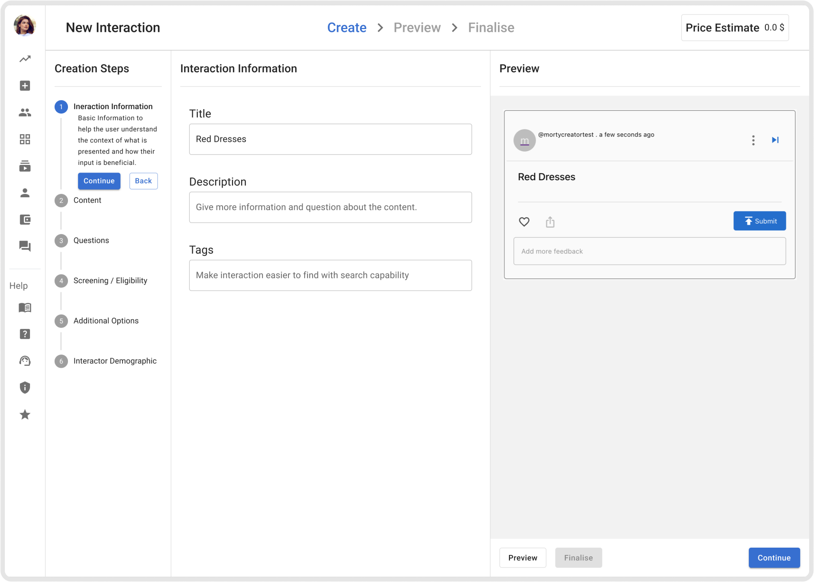
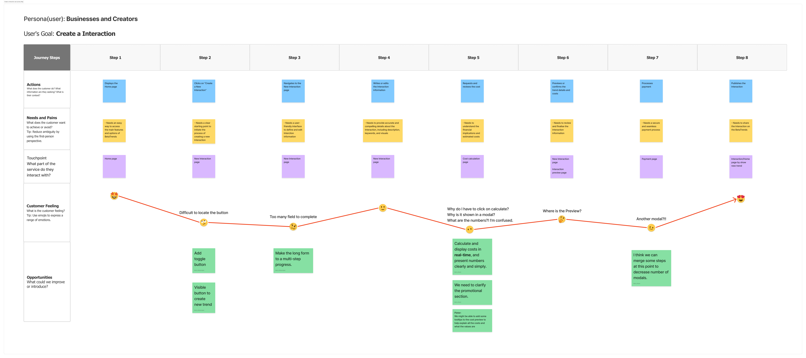
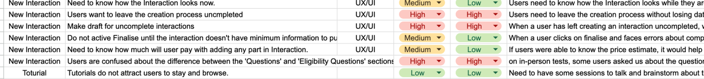
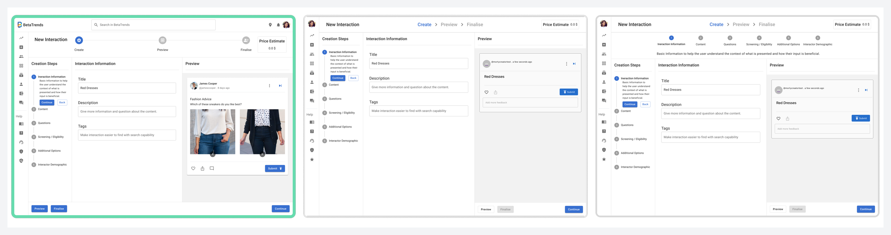

Weak orientation
A long setup task made it hard to see progress or understand what remained.
BetaTrends project
Usability testing showed a 47% reduction in Interaction-creation time.
BetaTrends was a market-research platform. Businesses used it to create an Interaction and ask a target audience for feedback. Creating one involved content, questions, screening rules, demographics, pricing, preview, payment, and publishing.
I mapped the journey, reviewed Hotjar recordings, created three design options, ran workshops, built prototypes, tested the design in Maze, and prepared the final designs for developer handoff.

Product context
An Interaction was something like a social-media post, but made for market research. A creator added content, questions, and a target audience; an interactor responded and the creator received feedback about their product or idea.
The problem
Creators had to find where to start, complete a long form, request a cost calculation, find the preview, move through modals, pay, and publish. An eight-step journey map showed three connected problems: weak orientation, delayed feedback, and preview separated from creation.

The map reframed several screen-level issues as one continuity problem.
A long setup task made it hard to see progress or understand what remained.
Cost and incomplete-state feedback appeared away from the inputs that caused it.
Creators had to leave creation to judge the audience-facing experience they were building.
Design implication: keep progress, feedback, and preview visible in the creation context.
Creators needed progress, feedback, and preview while working.
Behavioural evidence
Before the first limited launch, I recommended a user-insight tool. We chose Hotjar, and I reviewed recordings for the /newTrend page. Managing questions took time, question types were unclear, and price and incomplete-step feedback appeared too late.

Concept exploration
I ran workshops and created three options. Pieter and I compared step placement, preview space, price information, and question types, then chose the direction that kept steps, editing, and preview visible together.

Design direction
I changed the long form into visible stages using MUI. The steps were easier to see, but preview and feedback still felt separate from the main work.
I organised the page into creation steps, active editing, and audience preview; price moved into the same page and standard questions were separated from screening and eligibility questions.
Testing and iteration
Maze testing showed that incomplete work remained hidden until finalisation, navigation and question editing were difficult, and similar button treatments contributed to wrong clicks.
The test exposed the remaining friction before the design went to developers.
I added clearer icons, labels, and states so creators could see what was missing while moving through the flow.
I changed questions into accordions and added reordering, showing less information at once while keeping every question available to edit.
I made Continue more distinct from Back and reconsidered where preview and finalisation should appear.
Released result
The final design covered content, questions, screening and eligibility, demographics, preview, step states, and related interaction variations. I prepared the designs and supporting material for developers, and the redesign was released.
Usability test result
Completion time decreased by 47% in the usability test I conducted.
Reflection
Sometimes people need to see the structure, what depends on what, and where they are in the process. In future, I would set up the measurement plan earlier and keep usability-test exports with the design files.